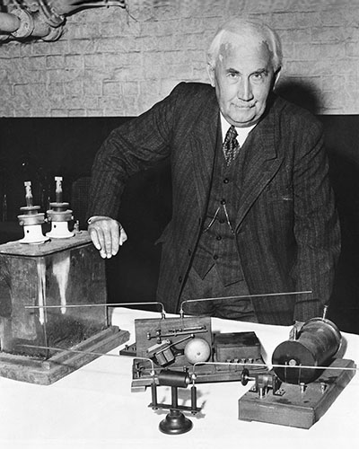

In the spring of 1904, Christian Hülsmeyer prepares to unveil the "Telemobiloscope"—a device designed to
pierce the thickest harbor fog.

The Inventor
Young Christian Hülsmeyer understood that Hertzian waves could reflect off metal hulls. He built the
world's first obstacle-detection radar.
Patent No. 165546
The "Telemobiloscope" used a vertical stack: a **high-voltage transmitter (below)** to shout waves and a
**shielded receiver (above)** to listen for the faint echo.
The Shout & Echo
To detect a ship, the device fires its lower spark gap, then mechanically rotates its upper receiver
array 180° to listen for the return signal.
Synchronized Bridge
Every rotation of the deck assembly was mechanically linked to a "Compass Dial" on the bridge, the direct
ancestor of the modern radar display.
A Forgotten Echo
The German Navy saw Hülsmeyer's "electronic eye" as a curiosity. The device was dismantled, and the
secret of radar was lost for thirty years.